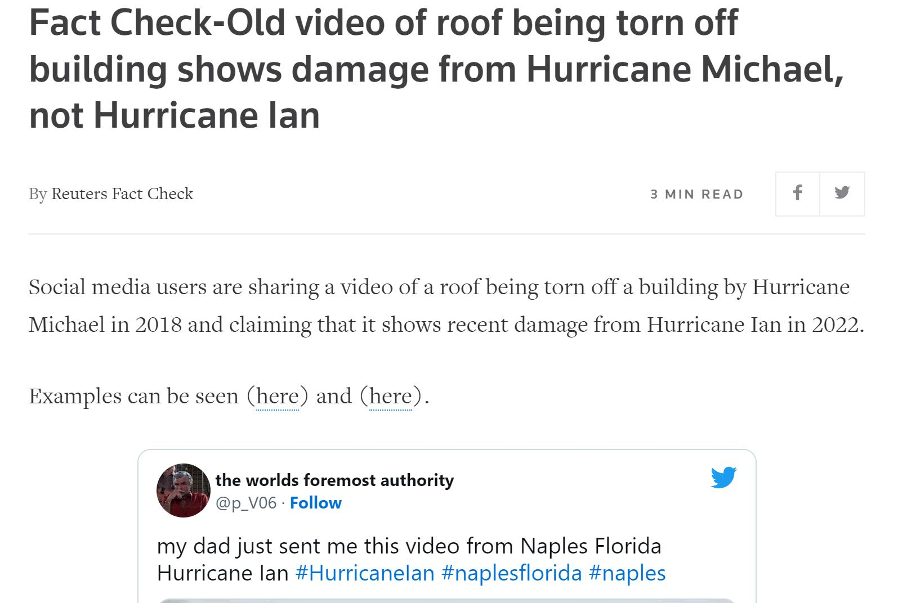

truth.csv
The instances in this data set include tweets from news agencies, famous reporters, and institutions. This data set is collected by accessing Twitter API with python. These instances are used to build rumor detection, functioning as negative samples (not rumors).

rumor_manually.csv
This is a collection of rumors on Twitter. This data set is collected and labeled manually. All rumor tweets are found from the fact-check reports on the official website of "Reuters" because they always put links to the source of the rumors in their reports. These instances are used to build rumor detection.